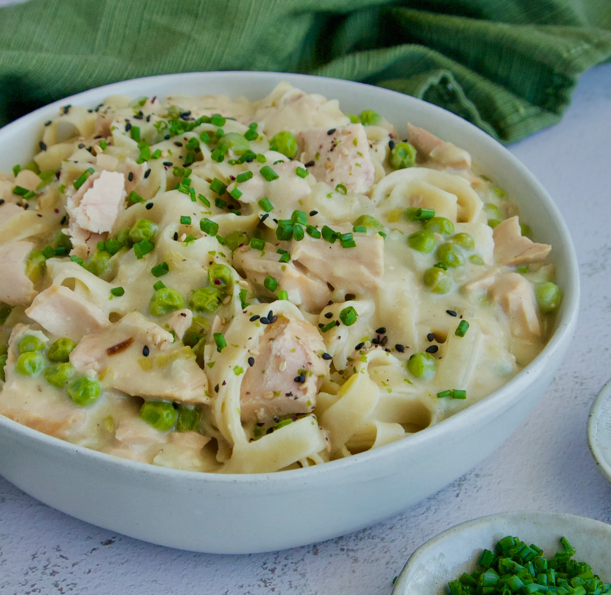

Tuna Helper

Description
Tuna Helper is a packaged meal kit product that is designed to simplify the process of
preparing a meal with canned tuna as the main ingredient.
It typically includes pasta or rice and a flavored sauce mix, along with instructions for
combining these ingredients with canned tuna to create a quick and convenient meal.
Tuna Helper is a part of the broader "Helper" product line produced by General Mills,
which includes various meal kits intended to make cooking easier and more convenient.
Ingredients
- 1 box of Tuna Helper (any flavor you prefer)
- 1 can of tuna, drained
- 2 cups of water
- 2/3 cup of milk
- 2 tablespoons of butter or margarine (optional)
Steps
-
Start by cooking the pasta or rice according to the package instructions.
This typically involves boiling the pasta or rice in water until it's tender.
Drain it and set it aside.
- In a separate large skillet, melt the butter over medium heat (if using).
-
Stir in the water, milk, and the contents of the Tuna Helper package.
Mix well and bring the mixture to a boil.
-
Once the mixture is boiling, reduce the heat to a simmer and add the drained canned tuna.
Stir everything together.
-
Cover the skillet and let it simmer for about 10-12 minutes, or as directed on the Tuna Helper package, stirring occasionally.
This allows the pasta or rice to cook and the sauce to thicken.
- When the pasta or rice is fully cooked, and the sauce has thickened to your liking, remove the skillet from the heat.
- Let it sit for a few minutes to cool slightly and thicken further.
- Serve the Tuna Helper hot and enjoy your meal!